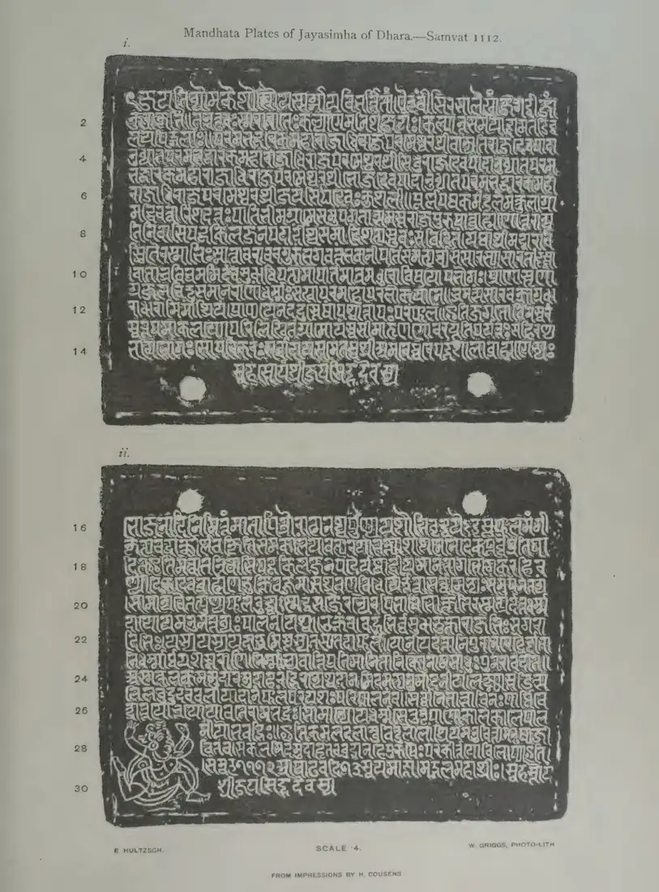
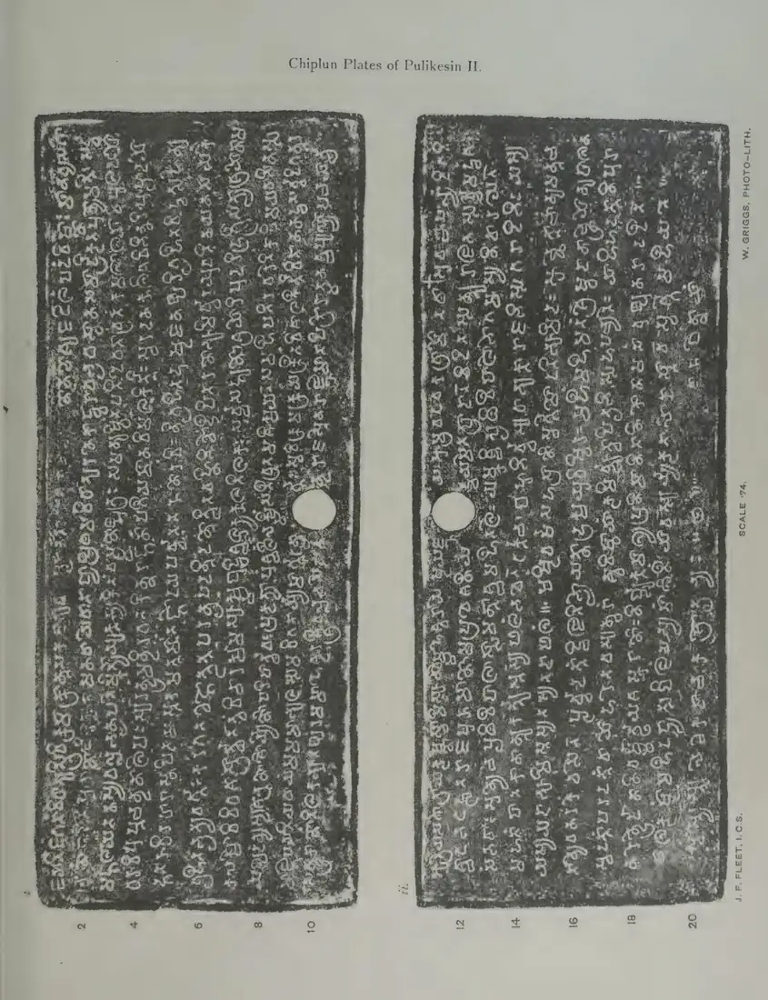

Chiplûṇ plates of Pulikêśin II
No. 8.— CHIPLUN COPPER-PLATE GRANT OF PULIKESIN II.
By J. F. FLEET, I.C.S., Ph.D., C.I.E.
This inscription was first brought to my notice in 1884, by Pandit Bhagwanlal Indraji, who then had the original plates in his possession. It was his intention to publish it; and a paper on it, written by him, was sent to the Secretary of the Bombay Branch of the Royal Asiatic Society: but it was afterwards lost, without being utilised. The impressions taken by the Pandit were indifferent; and, though his reading of the text had passed through my hands, I had not kept a copy of it. In 1889, however, I found the original plates themselves in the Society's library. And, as it seems unlikely that, after so long a time, the Pandit's paper will ever be recovered and published, I now edit the inscription from them.
The plates, which were obtained from a cultivator at Chiplūn, the chief town of the Chiplūn Tālukâ of the Ratnâgiri District, are two in number, each measuring about 10 1/8" by 4 3/8". The edges of them were turned up, so as to form raised rhms; and, except for some letters that are quite worn away in line 1, and a few that are rather illegible near the beginning of line 2, the writing is well preserved throughout.— The ring, on which the plates were strung, was accidentally destroyed by the cultivator who found them, in trying to clean them by the action of fire. Any seal that there may have been on the ring, was destroyed at the same time.— The weight of the two plates is about 1 lb. 15 oz.— The characters belong to the southern class of alphabets, and are of the regular type of the period to which the record belongs. The average size of the letters is a little over 1/2". The engraving is good, and fairly deep; but, the plates being rather thick, the letters do not show through on the reverse sides at all. The interiors of them are too much choked up with dirt or rust, for any marks of the working of the engraver's tool to be visible.— The language is Sanskrit; and, in addition to an opening verse in praise of Vishnu and seven of the customary benedictive and imprecatory verses at the end, there is one verse in line 7-8.— In respect of orthography, the only points that call for special notice are (1) the use of the jihvāmūlīya in nripatēh=kîrtyâ, line 3, and yah=kaśchit, line 13; (2) the use of the upadhmānīya in vātāpyāḥ=prathama, line 2, varmmaṇaḥ=putraḥ, line 3, janaḥ=parigrihîta, line 5, yaḥ=padam, line 8, bhūtaḥ=parama, line 10, and sādhuḥ=punar, line 18; (3) the doubling of k before r in vikkram-âkkrânta, line 1, and vikkrama-kkraya-kkrîta, line 9; and (4) the doubling of dh, by d, before r, in âddhvar, line 2.
The inscription is a record of the Western Chalukya king Satyâśraya-Pulikésin II. And the object of it is to announce that his maternal uncle, the Sēndraka Râja Śrivallabha-Sēnânandarâja, granted to a Brâhman the village of Âmravaṭavaka, and an allotment at the village of Avañchapali,3 in the Avarétikâ vishaya. The record is not dated; but the period to which it belongs is A.D. 609 to 642.
1 Read संवत्.
2 Read सिंह.
3 Probably for 'Avañchapalli.'
Plate 1 is bound after this page.
TEXT.1
First Plate.
1 Jayati2 jagatâm vidhâtus=tri-vikkram-âkkrânta-sakala-bhuvanasya nata-na ☎ ☎ ☎ ☎ ☎ ṇa-
☎ ☎ ☎ ☎ ☎ ṇa-nakh-âmśu-jaṭilam padam Vishṇôh [||*] Mânavya-sagô-
2 trân[â*]m Hâriti-putrânâ[m*] Chi(cha)lukyânâm=an[v*]avâyê Vâtâbyâ(pyâ)h=
prathama-vidhâtur=anêk-âddha var-âvabhrîbha-snâna-samârdri(rdrî)krita-punya-matti | 3
sarvva-
3 mangal-âyatanasya vallabha-nripatêh=kîrt[t*]yâ yuktasya Kîrttivarmmaṇaḥ=putraḥ
samanushṭhita-pati-dêvatâ-vratam 'Kamalâlayâ4-vipula-payô-
4 dhara-vipu(lu)pta-chandan-âlêpaḥ surêndra-mandira-gata-kinnar-ânganâ-patîyamâna-
vimala-ki(kî)rttiḥ sva-radana-kuliśa-vibhinna-ripu-hriday-ô-
5 dgatâ(ta)-rudhira-dhârâ-snapita-mastaka-matta-mâtaṅg-ôdaya-parvvata-taruṇa-raviḥ ni-
grîhîta-dushṭa-jaṇaḥ=parigrîhîta-vidvat-sahô(khô)=nu-
6 grîhîta-bhrîtya-varggaḥ kara-gata-khadg-ôttrîtta-para-nripa-danti-dant-ôtthita-vaḥni-śikh-
ôddîpita-raṇabhûmir=vvara-yuvati-nayana-sâyak-ai-
7 ka-lakshô vividha-sâstr-ârttha-tat[t*]va-vichâra-kshama-súkshma-buddhiś=Chalukya-
kula-tilakaḥ sarvva-sad-guṇ-âśrayô ripu-daridrasé=śrî-Satyâśrayô nâma [|*] '
8 Yaḥ5=padam nyasya sôtrûnâ6 śauryyêṇ=ôpari pârtth[i*]vaḥ prakrityâ puṁśchalîm
Lakshmîm satî-vratam=aśikshayat [||*] Sa mahîpatir=Avarêtikâ-vima(sha)ya-
vâsinas=sa-
9 mâjñâpayaṭi yath=Âyam mama mâtulas=samadhigat-âryya-mârgga unmârggaḥ7 sva-
vikkrama-kkraya-kkrîta-viśâla-kîrtti-vitâna-naddha-sarvva-digantara[h*]
10 Sêndrakânâm tilakabhûtaḥ=paramamâhêsvarasé=Śrîvallabha-Sênânandarâjas=têna
râjñâ8 mâtâpitrôr=âtmanasé=cha puny-ôpachay-ârttha[m*]
Second Plate.
11 Âtrêya-sagôtrâya Kṛishṇasvâmi-sûnavê Mma(ma)hêsvarây=êshṭa-yajñ[â*]ya Âmravaṭa-
vaka-grâmô tathâ Vâ(? châ)rubennâyâm9 Avañchapalyâm10 vi[m*]śati-
12 ś=châta-bhaṭa-dúta-râjapurumâ(shâ)nâm=apravêsaṇiyam dvayam=êtat=prâdât [|*] Vidi-
t[â*]s11=santu râjânas=sarrv[ê*] mad-vaṁśa-
13 sambhavâḥ anyê cha prithivî-pâlâs=sâmantâsé=cha mahîtalêḥ12 Yaḥ=kaśchit=prîthivî-pâlô
bhôgam=asya nivârayêt
14 mahatâm pâtakânân=tu karttus=tasya phalam bhavêt [||*] Uktam cha | Bahubhir=
vvasudhâ bhuktâ râjabhis=Sagar-âdibhiḥ yasya
15 yasya yadâ bhûmis=tasya tasya tadâ phalam || Shashṭim varsha-sahasrâni svarggê
môdati bhûmi-daḥ âchchhêttâ ch=ânumant[â*] cha
16 tâny=êva narakê vasêt [||*] Pûrvva-dattâm dvijâtibhyô yatnâd=raksha Yudhishṭhiraḥ13
mahîm mahimat[â*]m śrêshṭha dânâch=chhrêyô=nupâlanam [||*]
17 Sva-dattâm para-dattâm vâ yô harêtâ vasundharâm śva-vishṭhâyâm kṛimir=vbhû(bbhû)tvâ
pitrîbhis=sahâ pachyatêḥ14 Yâhiha15 dattâni purâ
18 narêndrair=dânâni dharm-ârttha-yaśas-karâni nirbbhukta-mâlya-pratimâni tâni kô nâma
sâdhuhĵ=punar=âdadîta ||
19 Dhâla1-krîshtâm mahî[m*] dadyât=sa-bi(bî)jâm sasya-mâinlinîm2 yâvat=su(sû)ryya-
krîtâ lôkâs=tâva[t*] svarggê mahîyatê ||
20 Svasty=astu lêkhaka-vâchaka-srôtribhyah || Ôm ||
TRANSLATION.
Victorious is the footprint, interspersed with the brightness of the toe-nails . . . . .
. . . . bowed down, of (the god) Vishnu, the creator of the (three) worlds, who traversed the whole universe in three strides!
(Line 1.)— In the lineage of the Chalukyas, who are of the Mânavya gôtra (and) are Hâritiputras,— of Kirtivarman (I.), the first maker of Vâtâpi, whose pious form was thoroughly well moistened by ablutions performed after celebrating many sacrifices, who was the abode of all auspiciousness, who was the king of favourites, (and) who was endowed with fame, the son (is)—
(L. 3.)— That ornament of the family of the Chalukyas, that asylum of all good qualities, that person who has but few foes, the glorious Satyâśraya-(Pulikêsin II.) by name, whose besmearing with sandal-wood oil is rubbed off by (the clinging of) the bulky breasts of the goddess of fortune who practises (towards him) the vow of treating a husband like a god; whose pure fame plays the part of a husband towards the women of the Kinnaras in the hall of (Indra) the lord of the gods; who is a very sun just risen above the mountain of dawn which is (his) elephant, infuriated with rut, the head of which is bathed in the trickling stream of blood that flows forth from the hearts of the enemies which are cleft open by the thunder-bolt that is its tusk; who punishes wicked people; who receives with hospitality learned people and friends; who confers favours upon servants; who has lit up the field of battle with the flames of the fire that rises from the tusks of the elephants of the hostile kings which are split by the sword that is held in (his) hand; who is the sole aim of the arrows which are the eyes of nice young women; whose keen intellect is capable of examining the essence of the meaning of various Sâstras; (and) who, (indeed) a king, having bravely planted (his) footstep over (his) enemies, has taught the goddess of fortune, who is fickle by nature, the observances of a true and faithful wife.
(L. 8.)— He, the king, issues a command to the inhabitants of the Avarêtikâ vishaya to this effect:— “My maternal uncle, the ornament of the Sêndrakas, the most devout worshipper of (the god) Mahêsvara, Śrivallabha-Sênânandarâja, who has acquired (a knowledge of all) the proper and improper practices of noble people, (and) who has covered all the spaces between the quarters of the compass with the canopy of (his) fame that was purchased by the price of his valour,— he, the king, in order to increase the religious merit of (his) parents and of himself, has given to Mahêsvara, the son of Krîshnasvâmin, of the Âtrêya gôtra, who has performed sacrifices, these two things, free from the right of entry by the irregular and regular troops, by messengers, and by the king's servants,— (viz.) the village of Âmravatavaka, and twenty at (the village of) Avañchapali on the (river) Vârubennâ.3 Let all kings, born in my race, and other rulers of the earth, and (all) fendatory chiefs in the world, be made to know (that) any ruler of the earth who may obstruct the enjoyment of this (grant),— to him will attach the penalty of one who commits the five sins.”
1 Read phâla, or hâla.— Metre : Ślôka (Anushṭubh).
2 Read mâlinîn.
3 Or, perhaps, Chârubennâ.— The text indicates an allotment of land, measured by twenty rivartanas of some other measure so well known that it was thought unnecessary to specify it.
Plate 2 is bound after this page.
(L. 14.)—And it has been said:—The earth has been enjoyed by many kings, commencing with Sagara; whosoever at any time possesses the earth, to him belongs, at that time, the reward (of this grant that is now made, if he continue it)! The giver of land enjoys happiness in heaven for sixty thousand years; (but) the confiscattor (of a grant), and he who assents to (an act of confiscation), shall dwell for the same number of years in hell! O Yudhishthira, best of kings, carefully preserve land that has previously been given to the twice-born; (verily) the preservation (of a grant) is more meritorious than making a grant! Whosoever confiscates land that has been given, whether by himself, or by another,—he is born as a worm in ordure, and is consumed together with (his) deceased ancestors! Those grants, productive of religion and wealth and fame, which have been formerly given here (on earth) by (previous) kings, (are) like worn-out garlands; verily, what good man would take them back again? He who grants land, (whether simply) ploughed, (or) planted with seed, (or) full of crops,—he is treated with honour in heaven, for as long as the worlds, created by the sun, endure!
(L. 20.)—Let prosperity attend the writer, the reader, and the hearers! Ôm!

